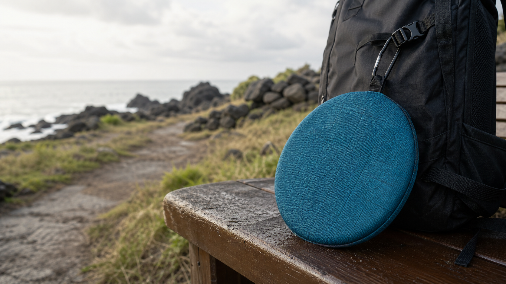

젖은 곳에도 바로 앉기
변덕스러운 제주 날씨, 축축한 풀밭, 물기 남은 벤치 위에서도 쉬는 결정을 미루지 않습니다.

JEJU TRAIL REST SEAT
젖은 벤치와 돌밭에서도, 올레길 위 나만의 휴식자리.
15mm 하이브리드 쿠션, 93g 초경량, 초발수 이중방수. 완주자를 위한 가장 제주다운 휴식 장비입니다.
WHY IT SELLS
변덕스러운 제주 날씨, 축축한 풀밭, 물기 남은 벤치 위에서도 쉬는 결정을 미루지 않습니다.
5mm 고밀도 PE와 10mm 고탄성 EVA가 딱딱한 지면의 냉기와 압박감을 나눠 받습니다.
카러비너와 웨빙 루프로 걸어두면 걷는 동안에도 제주다운 인증 아이템이 됩니다.
야자매트의 촉감과 할망 원형 방석의 형태를 현대적 아웃도어 소재로 다시 해석했습니다.
POSITIONING
구매의 첫 이유는 명확해야 합니다. 앉기 편해서, 젖은 곳에 앉을 수 있어서, 가볍고 예뻐서, 그리고 제주를 기억할 수 있어서. 명상은 그 다음에 따라오는 브랜드 감성입니다.
“앉는 순간, 길은 나만의 명상 공간이 됩니다.”
브랜드 세계관 카피15MM HYBRID BUILD
원형 실루엣, 올레 블루, 립스탑 텍스처
FIRST MARKET
무릎, 허리, 체력 회복이 구매 이유가 됩니다. “완주 장비”라는 명분이 가장 강합니다.
사용 가능한 로컬 굿즈입니다. 여행 뒤에도 캠핑, 산책, 피크닉에서 계속 쓰입니다.
나만의 휴식 의식이 필요한 사람에게 “길 위의 작은 도량”이라는 감성으로 설득합니다.
GO TO MARKET
1코스, 7코스, 10코스에서 착석감, 방수, 배낭 결착 만족도를 확인합니다.
초도 100-200개 한정으로 반응을 보고 색상과 원형 사이즈를 조정합니다.
올레 안내소, 제주 숙소, 올레시장 근처 팝업에서 체험 후 구매로 연결합니다.
한정판 컬러, 완주 배지 세트, 리사이클 라인으로 브랜드 세계관을 키웁니다.
LIMITED FIELD PREORDER
예상 판매가 28,000원. 필드 테스트 참여자는 론칭 전용가와 코스 후기 리워드를 우선 안내받습니다.